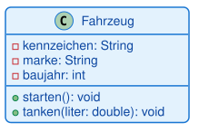

Aufgabe A1 [leicht]: Die Klasse Fahrzeug
Modellieren Sie eine einzelne Klasse Fahrzeug für eine Fuhrpark-Software. Sie soll folgende
Eigenschaften und Fähigkeiten abbilden:
- ein Kennzeichen (Text)
- eine Marke (Text)
- ein Baujahr (Ganzzahl)
- die Möglichkeit, das Fahrzeug zu starten
- die Möglichkeit, eine bestimmte Menge Kraftstoff (Dezimalzahl, in Litern) zu tanken
Alle Attribute sollen von außen nicht direkt zugreifbar sein, alle Methoden sollen von überall aufrufbar sein.
Musterlösung

class Fahrzeug {
-kennzeichen: String
-marke: String
-baujahr: int
+starten(): void
+tanken(liter: double): void
}Alle drei Attribute sind private (Kapselung: der Zustand des Fahrzeugs wird geschützt), beide
Methoden sind public (sie bilden die Schnittstelle nach außen). Das ist die typische Verteilung,
die Sie in fast jeder Klasse wiederfinden werden.